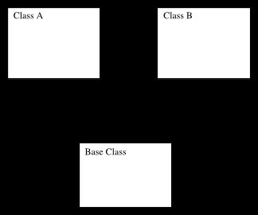

Gecko Layout High Level Design Document Template
[Use this template to start your high level design. Replace items in square
brackets with the appropriate text for your component, class or system. Keep
in mind that this is just a general template intended for most designs.
Your specific design may require different organization or topics - the
goal is to provide high-level information about the software to the reader.]
[Component/Class/System Name] High Level Design
Overview
[Provide a descriptive overview of the component, class, or system that
you are documenting. Describe what the system is supposed to do, where it
is in the overall system, who the clients are, how it is expected to perform,
and any other information that is important to convey to somebody interested
in understanding what the documented system is all about.]
Data Model
[This section describes the classes or components that make up the data
model for the system being documented. It can include a graphical representation
of the classes and their relationships to each other (derivation, aggregation,
ownership, usership, etc.). No implementation details are to be included
here, but general relationships and inter-relationships should be shown and
briefly described. The reader should be able to understand the players in
the system, and the extent to which those players interact with or are related
to the other players.]
Class/Component Diagram

Use Case
[Use Cases describe interactions between specific instances of the objects
or components described in the Data Model. There will generally be
use cases for each interesting runtime interaction between the objects
in the system. An extremely simple system will have at least one use case
describing the behavior of the simple system in action, but most systems
have many use cases corresponding to the any things that the system does.
The reader should be able to find the use case (or cases) that correspond
to the situation they are interested in understanding, and they should be
able to learn how data flows through the system, what objects are involved,
how object and data life-cycles are managed (e.g. where allocations
ad deallocations occur, and who maintains ownership). This section makes up
the bulk of the document. It touches on implementations and algorithms, but
rather than describing them in detail, it stays high-level and links to the
detailed designs that correspond.]
[Use Case 1: Component is Created]
The component is created by a client with...
[Image could go here if it were interesting enough...]
[Use Case 2: Component is Destroyed]
When the client is finished with the instance they created (or were given
ownership of) the destroy it by calling...
[Use Case 3: Component is used to find all invalid links on the page]
Descriptive text of how the component is invoked goes here. The other
components that it uses to carry out its task are shown, and the general
flow of data is documented.
[Picture of the component instance with annotations showing data flow,
ownership, etc. goes here]
State Transitions
[Where appropriate, the discrete states of a system should be enumerated
and the transitions between the states defined. Not all systems require
full state transition diagrams, but most systems have at least a handful
of interesting states, and at least a small number of interesting stimuli
that cause transitions from one state to another. Of course, classes
or components that are not stateful have no need for this section.]